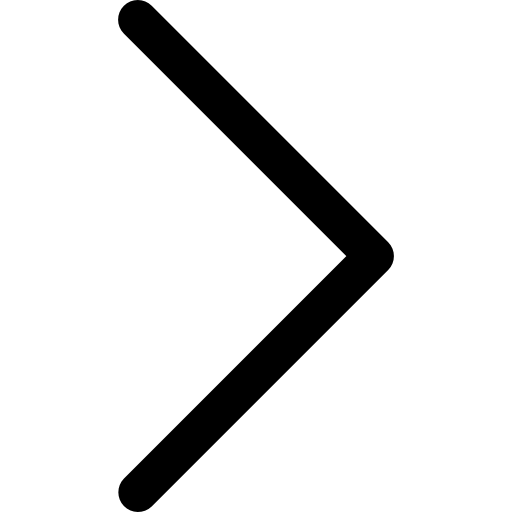
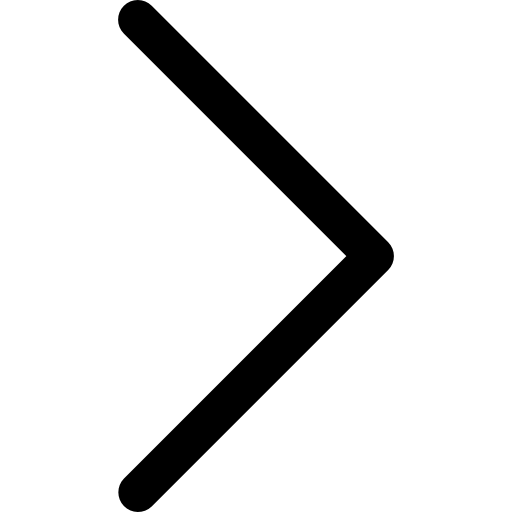

Final Showcase Generator
Python scripts to download all commits made to a GitHub repository and look for desired files within each downloaded commit to screenshot them. These screenshots were put to a time-lapsed video to show how the code changed.
Caloric Data Visualizer
Programmed a Python GUI application which takes a user-input of their caloric intake as an Excel file, and visualizes their intake over the month using Matplotlib. It generates additional statistics on the data using Pandas.
HawkPals
HawkPals is a social media web app which helps Laurier students find friends after lockdowns. Built with HTML, CSS, and JavaScript. Designed initially in Figma. Submitted for HawkHacks 2022 hackathon.
Student Marking Application
Developed an application which generates statistics and graphs on students’ grades stored in a database. The application also exports results into a Word document, for the convenience of the user.
Bob's Car Rental DBMS
Developed the software for Bob's Car Rental, a fictional chain of car rental stores. This software made use of a front-end and a Python backend, with a connection to the MySQL database to help associates keep track of inventory and contracts with customers.
 
